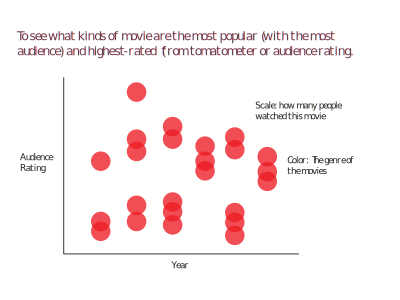
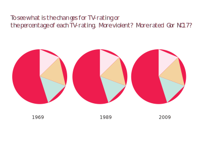
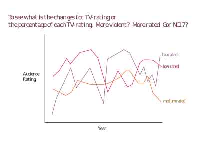
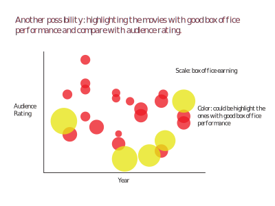

BY YI-CHIA CHENG
Data Description
This dataset is about "Moview Reviews"from the website of Rotten Tomatoes which comes from Kaggle. The variables are movies, rating, rotten tomatometer status, audience count, released dates and all kinds of moview review metric from the year of 1914 to 2019
To narrow down the data set (which included more than 15,000 movies), I only selected the movies which were released later than 1969. So it will make the dataset across the past 50-year timeframe and accounts for around 5500 movies.
Drafts & Brainstorming Documentation
Before moving on, I examined the data and brainstormed on several possible ways to visualization the information. There are mainly three perspectives I put in this section:
1. A scatterplot shows that which kind of movies are popular (more people watched) or highly rated.
2. Series of pie chart shows the changes of number of each TV-Rating (R, PG...).
3. A multiple line chart shows which year had the most highly-rated movies and the most low-rated movies.



Dataset end up not using
Another rotten tomatoes movie review data also on Kaggle.
I found this when finalizing my project. Overall, it has similar variables, but have some additional information like box office earnings which would be also very interesting to check.
Another Possibile Visualization
From the dataset mentioned above, there's other possibility to visualize it.

Which years have more "highly-rated" movies that Others?
According to Rotten Tomatoes Review, 2007 have the most highly-rated movies. However, it also has the most medium-rated and low-rated movies. It's possible that 2007 has more movies released or high activities on rotten tomatoes website which needs further examination on the statistics.
Among the types of COMEDY, HORROR, and DRAMA, which years have popular and highly-rated movies? What are them?
This bubble chart shows all the movies which are categorized as comedy, horror and drama and their rating (y-axis). The size of bubbles indicates the how many people reported on rotten tomatoes website that they watched the movies.
Some major findings are like most of the most highly-rated comedies seemed not to draw too many people to watch. However, the most popular comedies score around 44-69 which is not particularily high.
Horror movies have the least number and popularity among of the three types. Purple dot mean the movie is rated "rotten" in tomatometer on their website. In horrors, more than half movies are coded as purple.
Is the movie industry having more violent movies than ever?
In this two-chart comparison of 1969 and 2018. The movies rate "R" which represent as "Restricted" (Under 17 requires accompanying parent or adult guardian.) was 22% fifty year aog, while grows to 30% in 2018. And films rated "G" which represent as suitable for general was once took over half of the all movies in 1969, surprisingly, there was no movie on rotten tomatoes website rated "G". This extreme might be led by the TV Rating system gets tougher than 50 years ago.
1969
2018
Self-Critique & Reflection
1. What was the motivation behind the visualization you chose to create for your data set? Does
your visualization successfully achieve what you wanted it to achieve? Why or why not?
I was looking for data with longer timeline which I think it would show changes that might carry some meaning. Movie is in a lot of people's daily life. When to have certain type of movies might have something to do with that time period. That's why I chose to look into this movie review dataset.
During the exploration of my dataset, for example, I found a lot of popular comedies released during the period of 1998 to 2004. I would wonder if there was anying special happened? Or why horror movies overall received bad reviews, but a lot of people still can't stop watching it?
2. Adopt a neutral perspective, imagining you are a user viewing the visualization for the first time. What works well about the visualization? What does not work well? Why?
I think it would look interesting at first glance. There are some places I can improve, but I was happy to be able to make different types of visualization and coordinate with colors, clear paragraphs and sections. There are so many potentials and possibilities of this dataset. I believe a lot of audience would want to know more about this data and this dataset would defintely be a great material for future work.
3. What message is the visualization trying to convey? Does the visualization adequately convey
that message, through content, visuals, and functionality? Why or why not?
There are a lot of perspective to look at one dataset. Three charts of the visualization showed some piece of information at one time which I think it's good. However, while finalizing, I felt it's not as well-organized as I expected. All aspects are interesting, but it would be better if I could dig in each more. I might not have to do all three, but could do one but more in depth.
In the project I learned that it would be really benefitial to quickly prototype it in real data before digging into d3. For example, using RAWGraph or even excel to check what the results might look like. By doing so, I will be able to choose one or two aspects to focus and put the ones that are nothing too special aside. It will not only save some time but also help to make the whole project's message more concrete and organized too.
4. What do you personally like about the visualization, in its final form, and why?
I like the bubble chart which carries multiple variables in one chart. And being able to update it is fun too.
5. What do you personally dislike about the visualization, in its final form, and why?
I am still checking the updating function of the bubble chart. Seemly it looks ok, but when update it from the categories with less data points to the categories with more data points, the additional point will show in weird timing and not able to check with tooltip function. While, it doesn't go the other way aeound.
Besides, the color scale of pie charts also needs to re-arrangerd.
6. What are the strengths of the visualization? What are its weaknesses?
The strength is it looks pretty and all colors are coordinated with similar tone. I hope using red-ish tone colors can somehow relate to rotten tomatoes too!
7. What could be improved, in terms of visual layout and functionality?
I would like to add a year slider to update the pie chart to show the changes in terms of TV-Rating. And also, for filtering genre. Most movies are categorized under multiple genres. I had difficulty to select, for example, all movies with at least one genre categorized as comedy Or the movies whose first categorized genre as comedy. By doing this, it might be able to show more than my current visualization.
However, I think there is always a fine balance between. I tried to plot a prototype to see the overall picture of the first chart, if there are more than 1000 points on the chart at the same time, it would look messy and doesn't actually show much.
8. What are some alternative ways you could have used your data set to create a different kind of
visualization? Is your visualization choice a better or poorer representation of your data set?
Justify your response.
At first, I wanted to show the first line graph as stacked area chart. However, after making the chart, I found a simpler line chart can show much. For example, stacked area chart does help us to see the changes of amount of some variables clearly. However, with line chart, it easier to compare: xx year has more movies rated "rotten" than rated Fresh". We can see the intersect of the lines more clearly in a line gragh rather than a seemingly more fancy stacked area graph.